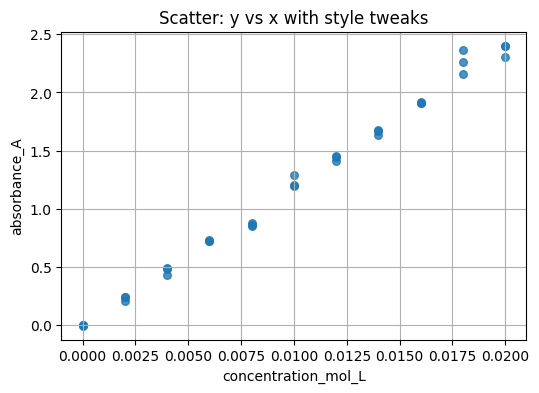
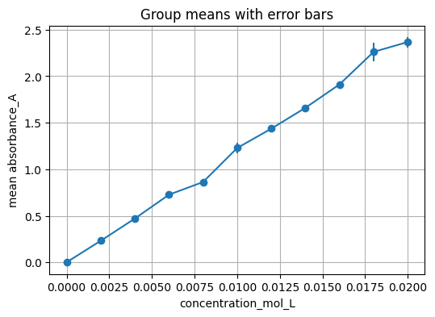
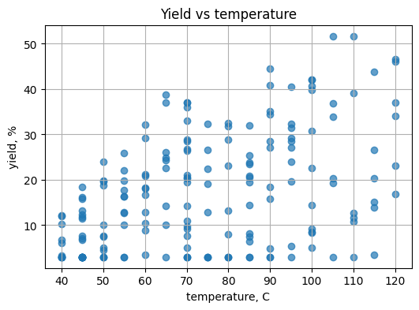
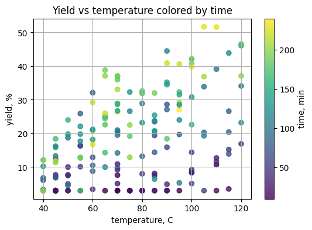
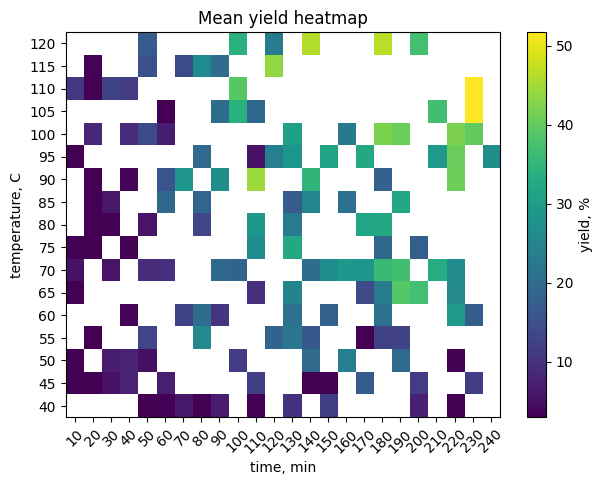
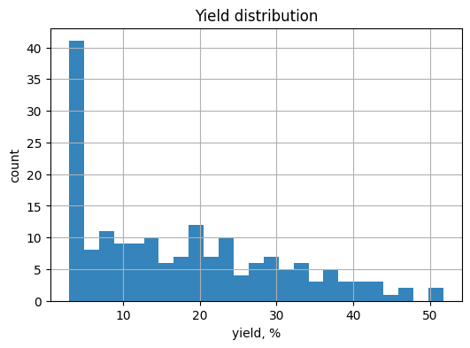

LECTURE 2
9. Solutions#
Search for # TO DO: in each block above and compare to the full code here.
Solution 8.1#
import pandas as pd
path = "sample_beer_lambert.csv"
# TO DO: read the CSV
df = pd.read_csv(path)
print(df.head())
print(df.info())
print(df.describe())
# TO DO: boolean mask and count
mask = df["absorbance_A"] > 0
count_positive = mask.sum()
print("rows with condition:", count_positive)
concentration_mol_L replicate absorbance_A
0 0.000 1 0.0050
1 0.000 2 -0.0032
2 0.000 3 0.0017
3 0.002 1 0.2448
4 0.002 2 0.2401
<class 'pandas.core.frame.DataFrame'>
RangeIndex: 33 entries, 0 to 32
Data columns (total 3 columns):
# Column Non-Null Count Dtype
--- ------ -------------- -----
0 concentration_mol_L 33 non-null float64
1 replicate 33 non-null int64
2 absorbance_A 33 non-null float64
dtypes: float64(2), int64(1)
memory usage: 924.0 bytes
None
concentration_mol_L replicate absorbance_A
count 33.000000 33.000000 33.000000
mean 0.010000 2.000000 1.196403
std 0.006423 0.829156 0.781941
min 0.000000 1.000000 -0.003200
25% 0.004000 1.000000 0.494900
50% 0.010000 2.000000 1.201700
75% 0.016000 3.000000 1.910200
max 0.020000 3.000000 2.401100
rows with condition: 32
Solution 8.2#
import matplotlib.pyplot as plt
xcol = "concentration_mol_L"
ycol = "absorbance_A"
# TO DO: style controls
point_size = 30
alpha_val = 0.8
marker_sym = "o"
plt.figure(figsize=(6, 4))
plt.scatter(df[xcol], df[ycol], s=point_size, alpha=alpha_val, marker=marker_sym)
plt.xlabel(xcol)
plt.ylabel(ycol)
plt.title("Scatter: y vs x with style tweaks")
plt.grid(True)

Solution 8.3#
key_col = "concentration_mol_L"
val_col = "absorbance_A"
summary = (
df.groupby(key_col)[val_col]
.agg(["mean", "std", "count"])
.reset_index()
)
x = summary[key_col].to_numpy()
y = summary["mean"].to_numpy()
# TO DO: standard deviation array
yerr = summary["std"].to_numpy()
plt.figure(figsize=(6, 4))
plt.errorbar(x, y, yerr=yerr, fmt="o-")
plt.xlabel(key_col)
plt.ylabel(f"mean {val_col}")
plt.title("Group means with error bars")
plt.grid(True)

Solution 8.4#
import numpy as np
import pandas as pd
import matplotlib.pyplot as plt
# Use provided file if present
path = "https://raw.githubusercontent.com/zzhenglab/ai4chem/main/book/_data/organic_synthesis_yields.csv"
# TO DO: read CSV
df_y = pd.read_csv(path)
df_y.head()
| reaction_id | temperature_C | time_min | yield_percent | |
|---|---|---|---|---|
| 0 | 63 | 80 | 50 | 3.0 |
| 1 | 177 | 70 | 170 | 28.6 |
| 2 | 34 | 65 | 180 | 22.6 |
| 3 | 167 | 105 | 230 | 51.7 |
| 4 | 94 | 65 | 130 | 24.9 |
# TO DO: scatter temperature vs yield
plt.figure(figsize=(6, 4))
plt.scatter(df_y["temperature_C"], df_y["yield_percent"], alpha=0.7)
plt.xlabel("temperature, C")
plt.ylabel("yield, %")
plt.title("Yield vs temperature")
plt.grid(True)

# TO DO: color by time, choose a colormap
plt.figure(figsize=(6, 4))
plt.scatter(df_y["temperature_C"], df_y["yield_percent"],
c=df_y["time_min"], cmap="viridis", alpha=0.8)
plt.colorbar(label="time, min")
plt.xlabel("temperature, C")
plt.ylabel("yield, %")
plt.title("Yield vs temperature colored by time")
plt.grid(True)

# TO DO: pivot and heatmap
pivot = df_y.pivot_table(index="temperature_C", columns="time_min",
values="yield_percent", aggfunc="mean")
plt.figure(figsize=(7, 5))
plt.imshow(pivot.to_numpy(), aspect="auto", origin="lower")
plt.colorbar(label="yield, %")
plt.yticks(range(pivot.shape[0]), pivot.index)
plt.xticks(range(pivot.shape[1]), pivot.columns, rotation=45)
plt.xlabel("time, min")
plt.ylabel("temperature, C")
plt.title("Mean yield heatmap")
plt.grid(False)

# TO DO: histogram with chosen bins
plt.figure(figsize=(6, 4))
plt.hist(df_y["yield_percent"], bins=25, alpha=0.9)
plt.xlabel("yield, %")
plt.ylabel("count")
plt.title("Yield distribution")
plt.grid(True)

Solution 8.5#
import pandas as pd
import numpy as np
import matplotlib.pyplot as plt
# TO DO: define bins and labels
bins = [40, 60, 80, 100, 120]
labels = ["40-60", "60-80", "80-100", "100-120"]
df_y = df_y.copy()
df_y["temp_bin"] = pd.cut(df_y["temperature_C"], bins=bins, labels=labels, include_lowest=True)
# TO DO: build groups and draw plot
groups = [grp["yield_percent"].to_numpy() for _, grp in df_y.groupby("temp_bin")]
plt.figure(figsize=(6, 4))
plt.violinplot(groups, showmeans=True)
plt.xticks(range(1, len(labels) + 1), labels)
plt.ylabel("yield, %")
plt.title("Yield by temperature bin")
plt.grid(True)
C:\Users\52377\AppData\Local\Temp\ipykernel_45120\742241996.py:13: FutureWarning: The default of observed=False is deprecated and will be changed to True in a future version of pandas. Pass observed=False to retain current behavior or observed=True to adopt the future default and silence this warning.
groups = [grp["yield_percent"].to_numpy() for _, grp in df_y.groupby("temp_bin")]
# Uncomment to generate:
# rng = np.random.default_rng(42)
# n = 180
# temperature_C = rng.choice(np.arange(40, 121, 5), size=n, replace=True, p=np.linspace(2, 1, 17) / np.linspace(2, 1, 17).sum())
# time_min = rng.choice(np.arange(10, 241, 10), size=n, replace=True, p=np.linspace(2, 1, 24) / np.linspace(2, 1, 24).sum())
# temp_scale = (temperature_C - 30) / 60.0
# time_scale = time_min / 180.0
# base = 100 * (1 - np.exp(-temp_scale)) * (1 - np.exp(-time_scale))
# noise_normal = rng.normal(0, 7, size=n)
# noise_neg = -rng.gamma(shape=1.2, scale=4, size=n)
# yield_percent = np.clip(np.round(base + noise_normal + noise_neg, 1), 3, 96)
# df_new = pd.DataFrame({"reaction_id": np.arange(1, n + 1),
# "temperature_C": temperature_C,
# "time_min": time_min,
# "yield_percent": yield_percent}).sample(frac=1, random_state=123).reset_index(drop=True)
# df_new.to_csv("organic_synthesis_yields.csv", index=False)
9. Solutions#
Open after you try Section 8.
Solution 8.1#
from rdkit import Chem
from rdkit.Chem import Draw
smi = "O=C(O)c1ccccc1Cl"
mol = Chem.MolFromSmiles(smi)
display(Draw.MolToImage(mol, size=(350, 250), includeAtomNumbers=True))
num_rings = Chem.GetSSSR(mol)
print("rings:", num_rings)
for b in mol.GetBonds():
print("bond", b.GetIdx(), b.GetBeginAtomIdx(), "-", b.GetEndAtomIdx(), "order", int(b.GetBondTypeAsDouble()))

rings: <rdkit.rdBase._vectclass std::vector<int,class std::allocator<int> > object at 0x000002F1983BD840>
bond 0 0 - 1 order 2
bond 1 1 - 2 order 1
bond 2 1 - 3 order 1
bond 3 3 - 4 order 1
bond 4 4 - 5 order 1
bond 5 5 - 6 order 1
bond 6 6 - 7 order 1
bond 7 7 - 8 order 1
bond 8 8 - 9 order 1
bond 9 8 - 3 order 1
Solution 8.2#
import pandas as pd
from rdkit.Chem import Descriptors, Crippen, rdMolDescriptors
names = ["caffeine", "acetaminophen", "ibuprofen"]
rows = []
for nm in names:
info = pubchem_smiles_by_name(nm)
smi = info["smiles"]
m = Chem.MolFromSmiles(smi)
rows.append({
"name": nm,
"smiles": smi,
"MolWt": Descriptors.MolWt(m),
"LogP": Crippen.MolLogP(m),
"HBD": rdMolDescriptors.CalcNumHBD(m),
"HBA": rdMolDescriptors.CalcNumHBA(m),
"TPSA": rdMolDescriptors.CalcTPSA(m)
})
pd.DataFrame(rows)
---------------------------------------------------------------------------
NameError Traceback (most recent call last)
Cell In[11], line 7
5 rows = []
6 for nm in names:
----> 7 info = pubchem_smiles_by_name(nm)
8 smi = info["smiles"]
9 m = Chem.MolFromSmiles(smi)
NameError: name 'pubchem_smiles_by_name' is not defined
Solution 8.3#
find = Chem.MolFromSmiles("Cl")
put = Chem.MolFromSmiles("F")
mol = Chem.MolFromSmiles("Clc1ccc(cc1)C(=O)O")
out = Chem.ReplaceSubstructs(mol, find, put, replaceAll=True)[0]
print(Chem.MolToSmiles(out))
Draw.MolToImage(out, size=(350, 250))
Solution 8.4#
mol = Chem.MolFromSmiles("c1ccccc1")
em = Chem.EditableMol(mol)
idx_C = em.AddAtom(Chem.Atom("C"))
idx_H1 = em.AddAtom(Chem.Atom("H"))
idx_H2 = em.AddAtom(Chem.Atom("H"))
idx_H3 = em.AddAtom(Chem.Atom("H"))
em.AddBond(2, idx_C, order=Chem.BondType.SINGLE)
em.AddBond(idx_C, idx_H1, order=Chem.BondType.SINGLE)
em.AddBond(idx_C, idx_H2, order=Chem.BondType.SINGLE)
em.AddBond(idx_C, idx_H3, order=Chem.BondType.SINGLE)
mol2 = em.GetMol()
Chem.SanitizeMol(mol2)
Draw.MolToImage(mol2, size=(350, 250), includeAtomNumbers=True)
Solution 8.5#
mixed = ["446157", "2244", "CCO", "482752", "c1ccccc1"]
for q in mixed:
if q.isdigit(): # looks like CID
info = pubchem_smiles_by_cid(int(q))
smi, cid = info["smiles"], info["cid"]
elif Chem.MolFromSmiles(q): # parses as SMILES
smi, cid = q, None
else: # treat as name
info = pubchem_smiles_by_name(q)
smi, cid = info["smiles"], info["cid"]
print(f"input={q} CID={cid} SMILES={smi}")
mol = Chem.MolFromSmiles(smi)
display(Draw.MolToImage(mol, size=(260, 200)))